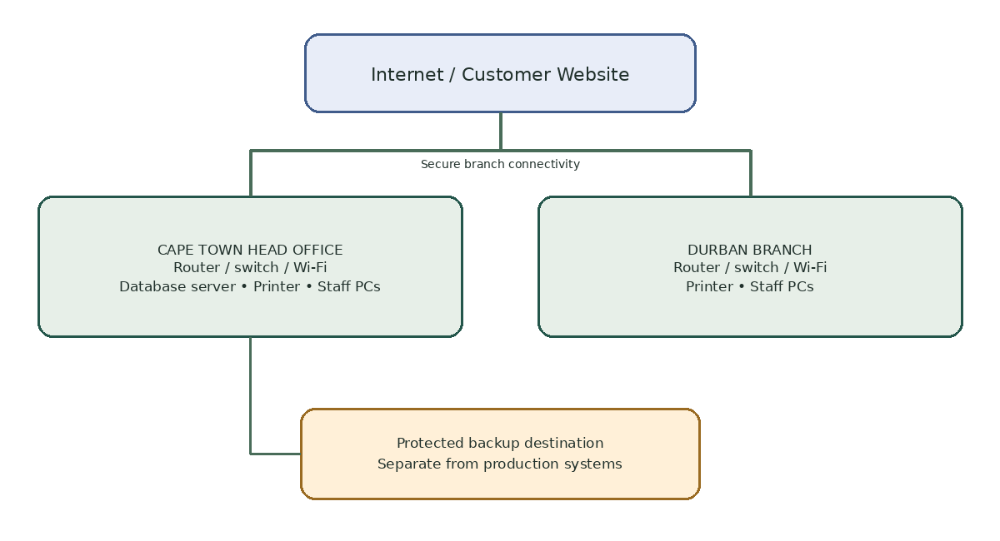
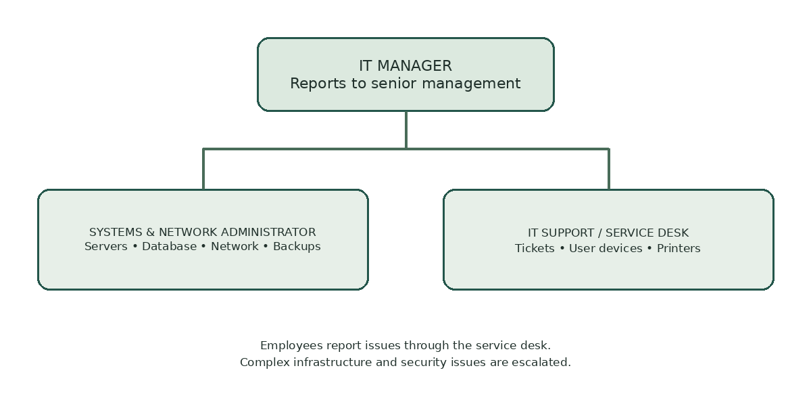
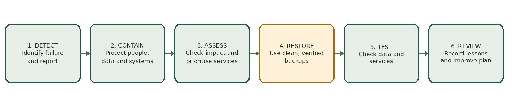

Welcome
This portal gives AFC employees at Cape Town and Durban a clear place to find IT procedures. Do not store passwords or confidential customer information on this static website.
Infrastructure overview

IT Department Structure

The IT Manager oversees the Systems and Network Administrator and the IT Support/Service Desk Technician. Employees report IT issues through the service desk.
IT Security Policy
- Use an individual account and never share passwords.
- Enable multi-factor authentication where available.
- Lock devices when unattended and keep approved software updated.
- Do not install unapproved software or disable security controls.
- Protect payroll, customer, financial and employee information.
- Report phishing, malware, lost devices and suspicious activity immediately.
- Back up critical data and test restoration regularly.
Acceptable Use
- Use company systems mainly for legitimate business.
- Do not access illegal or abusive content using AFC resources.
- Do not download pirated software or bypass security controls.
- Do not connect unknown USB devices without IT approval.
- Protect laptops while travelling and report lost equipment.
Technology Acquisition
- Document the business need.
- Ask IT to assess compatibility and security.
- Compare suitable suppliers and quotations.
- Obtain required manager and IT approvals.
- Purchase through an authorised process.
- Inspect, configure securely and record the asset.
- Hand over the equipment and provide basic user guidance.
Service Desk / Help Desk
- Report the problem with your name, branch, device and description.
- The service desk creates a ticket and assigns priority.
- IT performs safe troubleshooting and records actions.
- Critical and security incidents are escalated quickly.
- Record the fix and close the ticket after confirming service.
Disaster Recovery

- Server failure: assess impact, restore from a verified backup, test data and record the cause.
- Cyberattack: isolate affected devices, preserve evidence, contain the incident and restore only from clean backups.
- Network outage: check whether one or both branches are affected and contact the service provider where needed.
- Fire, flood or theft: protect people first, notify management and activate continuity arrangements.
Suggested schedule: daily critical-data backups, weekly backup review, monthly restore test and quarterly recovery exercise.